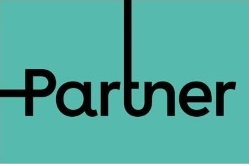

Dedicated to communicating better
Connect AI agents to phone numbers and SIP carriers. Run the voice infrastructure in your cloud, at your sites or with us.
Talk to usConnectix Platform Differentiators
Decentralized architecture
Create separate, segmented environments between your clients for full analysis and utilization. It simplifies management and billing, supports clear security boundaries, and provides white-label options with customer subdomains, storage and portals.
Independence
Select your own infrastructure resources for each client — SIP termination, SIP-compatible phones and recording storage — with no middleman. Buy termination, SMS and storage directly from the providers of your choice.
Customization
Built on a documented REST API for integration with your in-house systems. Connectix provides custom development, upgrades and new features for the requirements agreed in each project.
Use your carriers, infrastructure and existing product. Adapt the platform where the project requires it.
Who uses Connectix
Telecom and service providers
Operate customer accounts, numbers, routing, rate plans and billing from one system. Keep carrier relationships direct and give customers their own branded access.
Build your own product
Connect an AI agent, CRM, helpdesk or other application to phone numbers and carriers. Keep the product and its business logic.
Contact centers and software teams
Add browser calling, queues, campaigns and call records to the systems your team already uses.
Enterprise and private networks
Run voice at a customer site, in a private cloud or across multiple sites. Keep signaling, media, call records and recordings inside the required infrastructure boundary.
If you already have a system
Keep it. Connectix connects the application to phone numbers and SIP carriers and provides the routing, recordings, billing and operational tools around it.
Your application
Keep the AI agent, CRM, helpdesk, browser application or workflow your users already know.
Your carriers and numbers
Use the compatible SIP carriers, phone numbers and rate plans that fit your operation.
Your infrastructure
Choose the cloud account, servers, networks and storage used for calls, data and recordings.
Your operating rules
Set access, retention, maintenance and support requirements for each deployment.
How it works: Connect the application. Map numbers and carriers. Install the agreed voice nodes. Verify the call path. Operate through the portal, API or CLI. Discuss your system.
Customer references
Comments from teams we have worked with on production communications projects.
Last year I worked with voipappz to develop and integrate stress tests for Meucci’s VoIP Servers. Nir Levi, head of voipappz, effortlessly led the project and trained the company’s development team to understand the technology. I was impressed with his work and so we continued to have him consult us on FreeSwitch, WebRTC, and other general VoIP technologies. Nir strives to satisfy his customers and make complex projects simple. The voipappz approach to customer service streamlines and facilitates the complex world of VOIP technology.
Yuval Cnaann Co-Founder & COO, Meucci
I have been collaborating with Nir Levi, head of voipappz, for over a year now on several projects, Robohold being the current one. Nir uses a simple support-oriented approach and is personally invested in any project he takes on, availing himself at all hours and making sure we are 100% satisfied with the final product. voipappz really makes an effort to understand our needs and concerns, and pays particular attention to our time constraints. It is certainly worthwhile to work with voipappz, particularly because of the ongoing training and support it gives our team.
Yaron Gavish CEO & Founder, RoboHold
Recently, we developed and implemented a comprehensive communication solution for MEMO Global’s Call Center at our Haifa Site, based on voipappz’s VoIPBOX solution. Nir heads voipappz with devotion and gives customers a personal touch. I would recommend voipappz to anyone looking to add dependable WebRTC communication to a global CRM application.
Eyal Noam CIO, MEMO Global
We have been working with voipappz for over a year on the IOT Project for Toyota-Connected. We were interested in boosting flexibility, technical capabilities, joint operations with our overseas teams, and a personalized touch. Thanks to voipappz, we reached the POC quickly and received an immediate response to evolving issues. We are more than happy to recommend voipappz and continue collaborating with them in the future.
Gal Melamed Director of Data Product Management and Business Innovation at Toyota Connected Europe
Platform features
The delivery controls and operating features needed to run calls, customers, providers, data and integrations from one platform.
Choose where each tested release runs
Managed cloud
We run the platform for you. Connect your product and carrier accounts, then manage customers, calls and operations without maintaining the platform hosts.
Voice node at your site
Keep call processing close to your carriers or customer network on a server you control. We install and verify it; your team keeps the agreed data, recording and network boundaries. Existing PBX systems can remain connected.
Self-hosted control system
Run the control system in your own environment. Your team controls the domain, users, data, recordings, access rules and operating procedures while the same voice-node model serves each site.
From code to running voice
The delivery loop builds and verifies each release. After deployment, the runtime layers route calls, process media and report health across the node fleet.
Agent, application and operations
Keep your agent and product logic. Give users the portal, browser calling and customer views they need, with services, workflows, billing and reports in the same operating model.
Ingress and load balancing
Incoming calls reach a dedicated voice edge, which applies the route and selects a voice node. Add an active-active entry pair when availability requires it.
Voice nodes by site or capacity
Run media, recordings and PBX services near a carrier, customer network or local data boundary. Add nodes as your sites or call capacity grow.
Carrier egress under your policy
Each node sends outbound traffic over the trunk selected by your routing and cost rules. Keep existing PBX systems connected as SIP peers.
Separate releases from call handling
Release the portal independently from the voice fleet. Pin node images, validate every node before service and keep a defined rollback path.
CI, installer and CLI
Build and prove the node image in CI. Install and verify each node from the command line; health checks and monitoring continue after deployment.
WebRTC calling in your application
Run a softphone in the browser for assigned extensions, with calling, hold, transfer, mute and DTMF—without a separate desk-phone workflow.
Portal and Chrome extension
Use the portal for call state and agent availability. Add the optional Chrome extension for a configured CRM screen pop beside the browser tools agents already use.
Services and workflows
Connect calls to CRM, webhooks, email, SMS and provisioning through the service and workflow definitions your business needs.
Billing and rate plans
Apply tariffs and plans, run prepaid or postpaid accounts, meter call usage and enforce balance rules before a call costs you money.
Call control interfaces
Start, transfer and end calls from your application, then retrieve the resulting call records.
Developer console
Connect your product through the API, tokens and event callbacks. Test locally, inspect call events and ship changes without learning every telecom detail.
Call history for approved tools
A read-only MCP endpoint lets approved developer tools search locally stored call events and review one call's timeline. It cannot change the system or run arbitrary database queries.
Release checks
Build the complete voice-node image, place a real SIP test call and verify each node after installation.
Numbers and routing
Assign phone numbers and route them to menus, queues, groups or application workflows.
Call recordings
Store, index and retrieve recordings under the retention policy and storage location you select.
Reports and exports
Review call activity and operational data, query historical records and export results to CSV.
Event callbacks
Notify your product when a call is answered, transferred or ended so its workflow stays in sync.
Bring people together
Put customers and teams in the same conversation when a call needs more than one person.
Live operations
See active calls, registered devices and node health while the service is running.
Queues and agents
Route callers into queues, assign agents and skills, and follow queue and agent state.
Outbound campaigns
Run outbound call lists with retry rules, dispositions and blacklist handling.
Business-hours routing
Send calls to the right destination for the customer’s hours, timezone and holiday schedule.
Voice menus
Build scripted menus, announcements and text-to-speech flows for customer-specific call handling.
Voicemail to email
Deliver voicemail notifications and recordings using customer-specific email templates.
Customer portals
Give customers branded access to the resources and views assigned to their account.
Free trial: evaluate the platform with your team before choosing a deployment. Contact us to arrange access and review your requirements.
Pricing that follows your deployment
PCloud is billed monthly by capacity. Each tier has a maximum number of concurrent calls and users or extensions. Pay annually and save 10%.
A concurrent call is an active internal or external call. Users include extensions. It is not a per-seat price.
Included with every tier
| Voice and PBX | Browser calling, extensions, phone-number routing, voice menus, voicemail, call recording and group calling. |
|---|---|
| Contact center | Queues, agents, skills, live call control, business-hours routing and outbound campaigns. |
| Customer operations | Customer accounts, environments, users, permissions, balances, customer portals, dashboards and reports. |
| Billing | Tariffs, rate plans, prepaid and postpaid accounts, call metering, transactions and balance rules. |
| Integrations | API access, event callbacks, services, workflows, developer tools and read-only MCP documentation resources. |
| Infrastructure | Node health, live registrations, system monitoring, command-line checks, release checks and software updates. |
Billed separately: carrier charges, phone numbers, call usage, installation and custom integrations.
Support and monitoring: $280 USD per month, when required. Includes node and service health checks, alerts, incident handling, maintenance coordination and service reporting. Professional services are quoted separately.
One-time purchase: self-hosted deployments are available as a separate commercial offer. The quote covers the license, node capacity, installation and optional support.
Every quote states the tier, user and concurrent-call capacity, deployment scope, carrier costs and support. Discuss yours.
Commercial and deployment FAQs
What does CI for VoIP mean?
It is a repeatable delivery path for the voice layer: source and configuration checks, a complete node-image build, a real SIP round-trip, a versioned release, installation and a post-install health verdict. Project-specific carrier and acceptance tests are added to that path where required.
Can an AI agent review previous calls?
The current MCP interface is for approved developer and coding tools. It can search the local event store and return one call's events in time order without write access. Automatically giving a live voice agent previous recordings, transcripts or customer conversations requires a separately designed and approved integration.
How are subscription plans priced?
PCloud is priced by concurrent calls and maximum users or extensions. Monthly billing is standard; annual billing is shown in the table. Carrier usage, installation, integration and support are quoted separately.
What does the self-hosted system include?
A self-hosted deployment includes the central control system and the agreed voice nodes on your infrastructure. The written scope defines capacity, sites, data storage, updates, installation and who operates each part.
What is billed separately?
Carrier calling and messaging charges are separate from the platform. Migration, integration, custom development, on-site work, training, professional server deployment and support are listed in the written scope.
Can we use our own carrier?
Yes. Connect compatible SIP trunks and load your own rates. Your carrier relationship and carrier charges remain yours; the Connectix quote states any platform or service charges.
What does support and monitoring include?
The optional support and monitoring plan is $280 USD per month. It covers node and service health checks, alerts, incident handling, maintenance coordination and service reporting. Support hours, response targets, covered systems and escalation contacts are stated in the written SLA. Migration, custom development, on-site work and training are professional services and are quoted separately.
Can Connectix integrate with an existing system?
Yes. CRM, helpdesk and business tools connect through the API and webhooks; deeper integration is scoped in the quote.
Where are call data and recordings stored?
In a self-hosted deployment, the central database and recording storage run on infrastructure you select. A hybrid deployment can keep call processing and recordings at the required site. Storage location, retention, backup and access are agreed in the deployment design.
How are access and audit handled?
Customer separation and role-based access rules control which screens and operations an account can use. Authentication events and call activity are recorded for operational review. Any export, archive or retention requirement is defined as part of the deployment.
Can we keep our existing communication providers?
Yes. The architecture review defines what stays in your product, what connects to Connectix, and whether carriers, routing, recordings or customer deployments move to the Connectix layer. Your existing providers are not automatically replaced.
What does this look like for a LiveKit application?
Keep LiveKit as the realtime room or agent layer. Connectix can sit around it with DID and customer assignment, carrier routing, human handoff, provider-cost records, usage, invoicing and audit. The production adapter and end-to-end call proof are scoped and certified for the deployment; this is not presented as a built-in adapter today.
More questions? Contact us.
Telecom companies we have worked with
Telecom operators, service providers, enterprise engineering teams, call centers and software companies.




 TechMer
TechMerMER Group HOT Telecom
Get in touch
Discuss your infrastructure, migration or integration Talk to us
You can also email us Our address is on the contact page
Talk to us